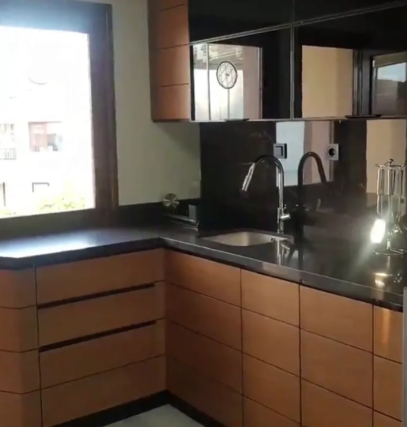
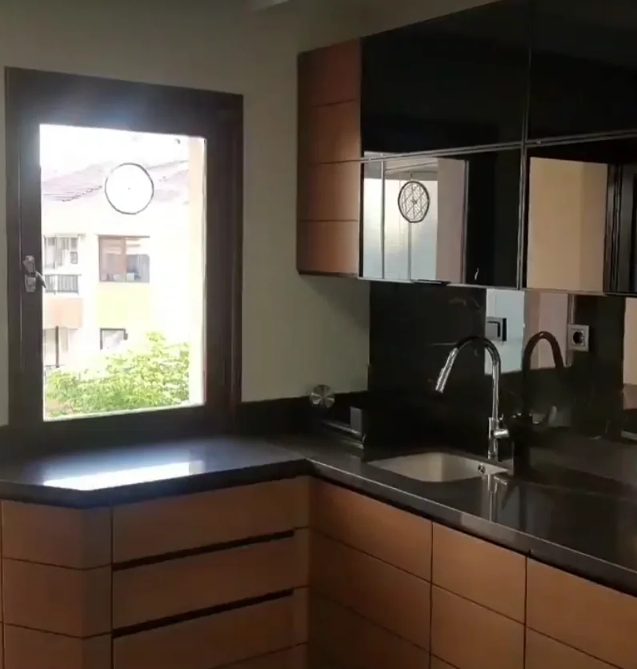
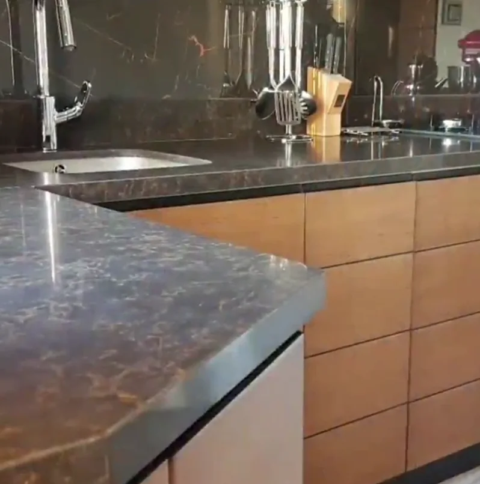

Mutfak dolabı
Pencere önü, kolon, kombi köşesi: mutfağın en zor yerleri ölçüyle çözülür. Çekmece sırası, tezgâh hattı ve üst dolaplar aynı çizgide.
Mutfak dolabı sayfasıMutfak dolabı, vestiyer, gardırop ve gömme dolap; Sincan Sanayi Sitesi'ndeki atölyemizde, sizin duvarınızın ölçüsüyle. Ustayla doğrudan konuşursunuz.
Google Haritalar: 4,9 · 26 yorum (20 Ekim 2026 itibarıyla)

Hepsi ölçüyle, hepsi Sincan'daki atölyemizden.

Pencere önü, kolon, kombi köşesi: mutfağın en zor yerleri ölçüyle çözülür. Çekmece sırası, tezgâh hattı ve üst dolaplar aynı çizgide.
Mutfak dolabı sayfası
Antrede ayna ve askı, koridorda tavana kadar dolap, yatak odasında köşe gardırop. TV ünitesi ve konsol da bu işlerin içinde.
Vestiyer ve dolap sayfasıBir müşterimiz için ayous ağacından karavan yaptık; iki yıl sonra yorumunu yazdı. Alışılmadık bir fikriniz varsa önce konuşalım.
Karavan sayfası
Fotoğraftaki mutfak bizim işimiz. Mutfak dolabı yaptıracak herkese, teklif karşılaştırırken bu noktalara bakmasını öneriyoruz.
Çekmeceler arasındaki boşluk baştan sona aynı mı? Bozulan hiza, gövdenin ya da menteşenin oynadığını gösterir.
Fotoğraftaki eviye tezgâhın altından takılı; kenarında su tutacak bir çıta yok. Hangi eviye tipinin tezgâhınıza uyduğunu baştan konuşun.
Bu mutfakta kulp yok; çekmeceler yatay bir kanaldan tutularak açılıyor. Kulpsuz kapak temiz görünür, çocuklu evde kulpla karşılaştırarak seçin.
L mutfakta tezgâhın döndüğü köşe en çok yük alan yerdir. Köşe dolabının nasıl kullanılacağını (döner raf, derin çekmece) çizimde görün.
Google Haritalar'daki yorumlardan, 20 Ekim 2026 tarihinde okunduğu gibi. Yorumların tamamı ve müşterilerin paylaştığı fotoğraflar Haritalar'da.
Mobilya konusunda gideceğiniz tek adres. Murat ustanın ustalığı 10 numara. Kullandığı malzeme kalitesi 10 numara, rahatlıkla bütün mobilya işlerinizi yaptırabilirsiniz. Ustam ellerine sağlık.
Sanat ve tecrübede çıtanın üstünde bir işletme, kaliteden ve müşteri memnuniyetinden ödün vermeyip geniş çaplı üretim kapasitesi ile mobilya ve aksesuara dair her işi itinalı temizlikte zamanında teslim etmesi en iyi yanı. Ayrıca güler yüzlülüğü için özellikle Murat ustaya çok teşekkür ederim…
Ben karavan yaptırdım. Hiç bir tane demirden karkas olmamasına rağmen iki yıldır kullanıyorum, inanılmaz sağlamlıkta. Çok özel bir ağaçtan yaptı; dünyanın en hafif ağacı olan ayous ağacı kullandı. Emeğine sağlık, süper bir ustalık ve kişilik sahibi bir abimdir. Çok ama çok teşekkür ederim…
Alanın birkaç fotoğrafını ve aklınızdaki ölçüyü WhatsApp'tan gönderin. Ölçü yoksa da yazın; konuşarak başlarız.
Telefonda ya da Sincan Sanayi Sitesi'ndeki atölyemizde; ne istediğinizi, nasıl kullanacağınızı anlatın.
Yerinde net ölçü alınır; kapak, renk ve tezgâh birlikte seçilir. Fiyat ve teslim tarihi bu seçimlere göre netleşir.
İş atölyede hazırlanır, evinizde yerine takılır.
Bu form hiçbir yere kayıt göndermez. Seçtikleriniz aşağıdaki mesaja dönüşür; "WhatsApp'ta aç" deyince mesaj sizin WhatsApp'ınızda, gönderilmeye hazır açılır.
Mutfak dolabı, vestiyer, gardırop, gömme dolap, TV ünitesi ve konsol gibi özel ölçü mobilya. Karavan gibi alışılmadık işleri de konuşuyoruz.
Atölyemiz Sincan Sanayi Sitesi'nde. Ankara içindeki işler için yazın; Sincan, Etimesgut ve Eryaman bize en yakın bölgeler.
Ölçü, kapak ve gövde malzemesi, tezgâh ve aksesuarlara göre. Fotoğraf ve kaba ölçüyle konuşmaya başlarız; net fiyatı ölçü ve seçimlerden sonra veririz.
Evet. Adres: Ahi Evran Mahallesi, Sincan Sanayi Sitesi. Gelmeden önce 0532 177 06 19'u arayın; usta işte ya da montajda olabilir.
Çalışma saatlerimizi henüz burada yayınlamadık (20 Ekim 2026 Salı günü Haritalar'da kapanış 18:30 görünüyordu). Gelmeden önce arayın; usta montajda olabilir.
Harita Google'dan yüklenir; siz tıklayana kadar Google'a istek gönderilmez.